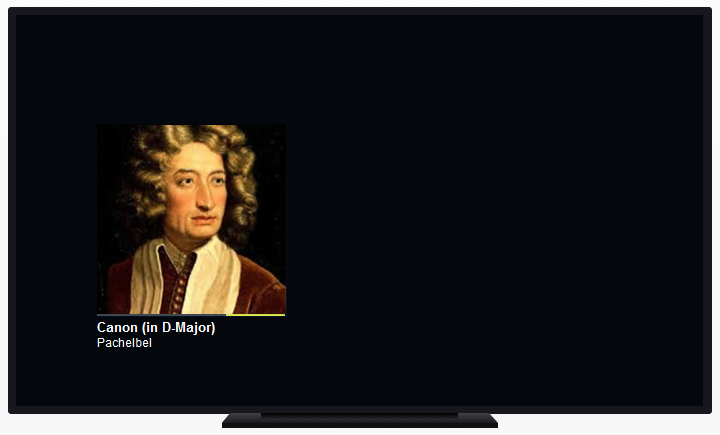

Google Cast Receiver Application Id property
Enables media casting by using Google services. Scope Objects: Menu, Panel, Work With (Only Main Objects) Description
This property allows you to enable Google Cast support for media playback (audio in background, images, or videos), whose value must be the application identifier that runs on the Google Cast receiver device when casting from the application that has the property set. How does it work?When you set this property, the app is considered as a sender, showing the cast icon in the top right corner when a cast device is detected, and the end user can share media content with a receiver (e.g. Chromecast device connected to a TV).  What is the Receiver Application Identifier?The cast architecture has two main components:
The receiver is a particular web application executed in the cast device. Unlike a typical web application, the receiver is not identified by a URL. It uses a unique identifier provided by Android through its developer console when the application is registered. There are three kinds of receivers:
For the last two receivers, you must get the identifier once you have registered it in the developer console. Notes
Run-time/Design-timeThis property applies only at design-time. How to apply changes
AvailabilityThis property is available since GeneXus 15. See Also
|

| Backlinks |
| Audio external object |
| Native Mobile Main object properties |